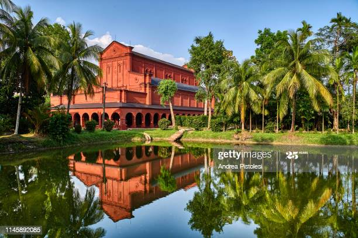

If you’re thinking of planning a destination wedding, you’ve come to the right place! Destination weddings have become extremely popular over the last 10 years, and it’s no wonder. Gathering all your family and friends in a fabulous location for your special day is super appealing for so many reasons.
Sometimes planning a destination wedding can even be less expensive than planning a wedding at home, mainly because destination weddings are more intimate (fewer guests = cost savings). Plus, you can find all-inclusive wedding packages, and some resorts offer free weddings with a certain number of room bookings. There’s also the added bonus of vacation-level relaxation before your wedding: think sipping mai tais on the beach before you walk down the aisle (just be sure to watch those tan lines!). So read on to find info on all things destination weddings, from finding wedding locations and venues to advice and tips for the big day. .

Southern city and divisional town of Barisal division. Barisal is famous for paddy growing & many small and big rivers. The town is busy like most others in Bangladesh. Mobile phone service is well established, with good 3G connections.
Telephone -9125902
Email-BarisalWeddings@BRWeddigns.com
Address- Barisal Town